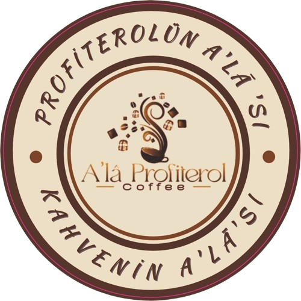
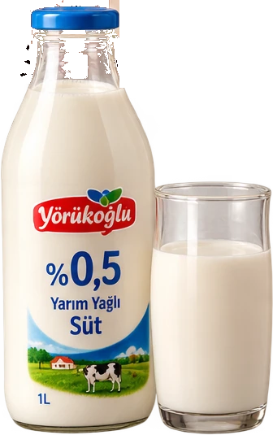
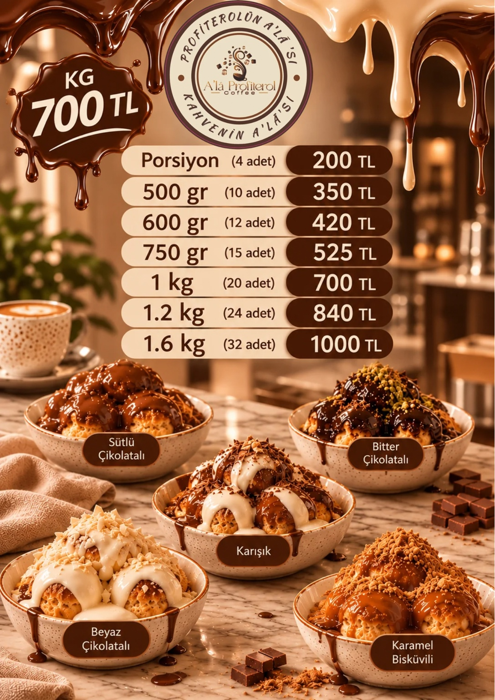
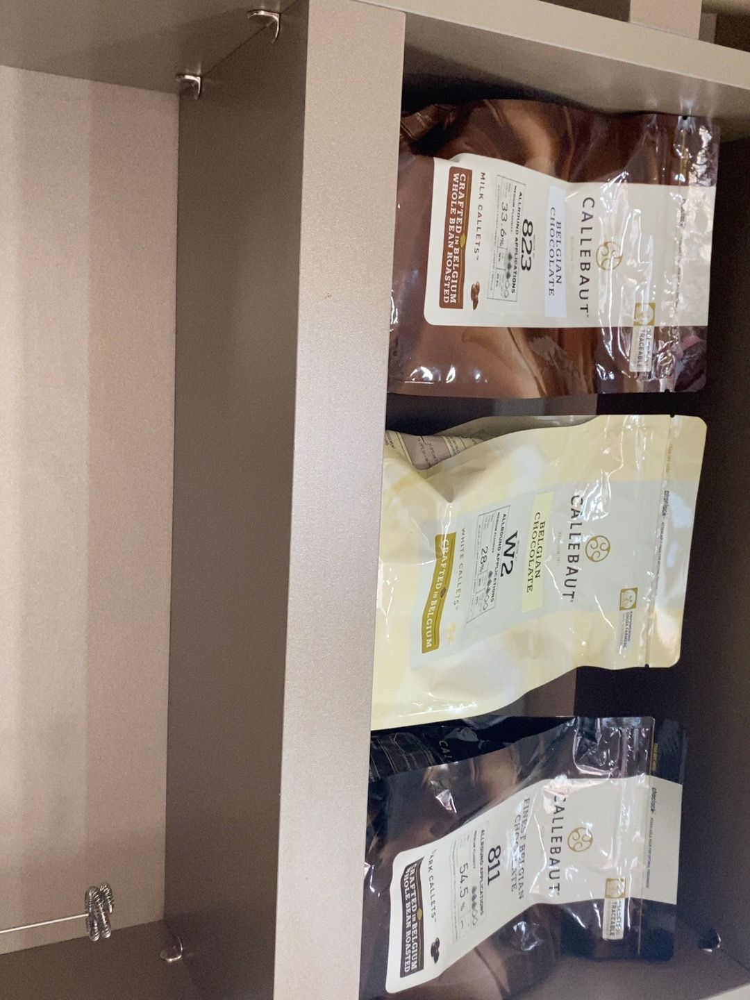
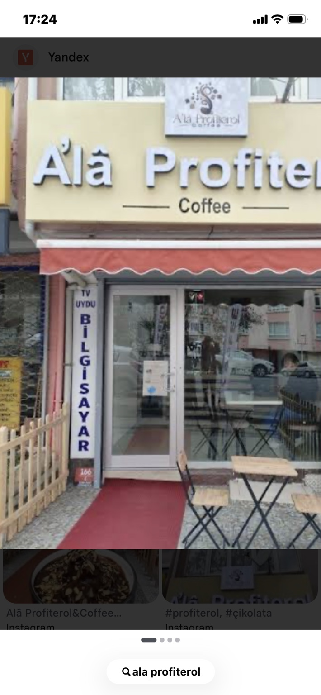

×
Ürünlerimizde kullanmadıklarımız
- ×Yapay tatlandırıcı ve glikoz şurubu
- ×Yapay renklendirici ve koruyucu
- ×Trans yağ ve palm yağı

A’lâ Profiterol & COFFEEHer lokmada mutluluk
Günlük taze olarak hazırlanan profiterollerimiz, çikolata ve kahve keyfiyle buluşuyor.
Çikolata seçimimiz
Sütlü, beyaz ve bitter Callebaut çikolatalar, taze kremayla dolu profiterolün üzerine dökülür.
Özenle hazırlanır
Her gün taze hazırlanan hamur, her lokmada aynı lezzeti sunar.
Her detayında özen, her lokmasında gerçek lezzet.

Profiterollerimizde kullandığımız çikolataları özenle seçiyoruz.
 Un
Un
 Yumurta
Yumurta

Süt Tereyağı
Tereyağı
 Gerçek Çikolata
Gerçek Çikolata
 Taze Krema
Taze Krema
Gerçek malzemelerle, gerçek lezzet!
Gerçek malzemelerle, gerçek lezzet!
A’lâ’nın özenle hazırlanan çikolatalı profiterol lezzetlerini keşfet.

Yumuşak iç kreması ve sütlü çikolata lezzeti.
Yoğun çikolata tadını sevenlere özel.
Beyaz çikolatanın kendine özgü lezzeti.
Beyaz ve sütlü çikolatanın bir araya geldiği lezzet.
Karamel bisküvi sosuyla farklı bir tatlı deneyimi.
Mekânımızdan ve günlük hazırlık sürecimizden görüntüler.




Gerçek ziyaretçi değerlendirmelerini Google işletme profilimizde inceleyebilir, kendi deneyiminizi paylaşabilirsiniz.
Profiterol · Kahve
Gerçek misafir deneyimlerini ve güncel değerlendirmeleri Google işletme profilimizde keşfedin.
G Google’da GörüntüleZiyaretçilerimizin paylaştığı gerçek deneyimleri Google profilimizde okuyabilirsiniz.
Güncel puan ve değerlendirmeleri doğrudan Google üzerinden inceleyebilirsiniz.
A’lâ ziyaretinizin ardından yorumunuzu Google işletme profilimize bırakabilirsiniz.
Tatlı mutluluk, A’lâ’da...
Sevdiğin lezzetlere kullandığın sipariş platformundan ulaş.